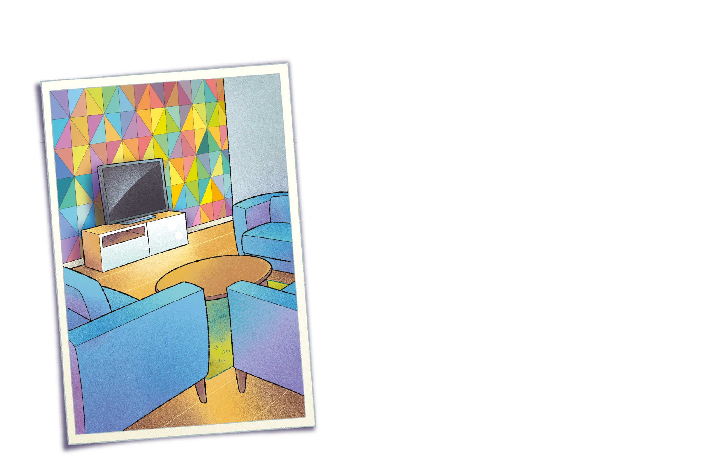

Unidade 7 - Triângulos e quadriláteros

Reinaldo Rosa/Acervo da Editora
155
![Ilustração de uma sala com um grande sofá amarelo com duas almofadas, uma em cada ponta do sofá. A almofada da esquerda é azul, a da direita é roxa. À frente do sofá, vê-se parcialmente uma mesinha de centro redonda com dois livros em cima, um na cor rosa e o outro é verde. Ao fundo, atrás do sofá, a parede em mosaico com figuras geométricas formada por cubos e blocos retangulares, nas cores cinza escuro, cinza claro e branco. A união das figuras geométricas dá a sensação de uma imagem tridimensional.](../../resources/images/8ANO_U7_image/Mat-8A_U1_001.png)
A geometria também está presente nas decorações e confere personalidade ao ambiente, deixando-o mais original. Ela pode compor o recinto com cores mais vibrantes, deixando-o divertido, ou mais sóbrias, utilizando-se tons monocromáticos, surgindo então um ambiente mais minimalista.
converse
1. Nos dois ambientes que visualizamos nas ilustrações, foram usadas formas geométricas para compor a decoração das salas. Quais
as formas geométricas predominantes em cada uma das paredes
desses ambientes?
2. Cite algumas características das formas geométricas que foram usadas para compor a decoração desses ambientes.